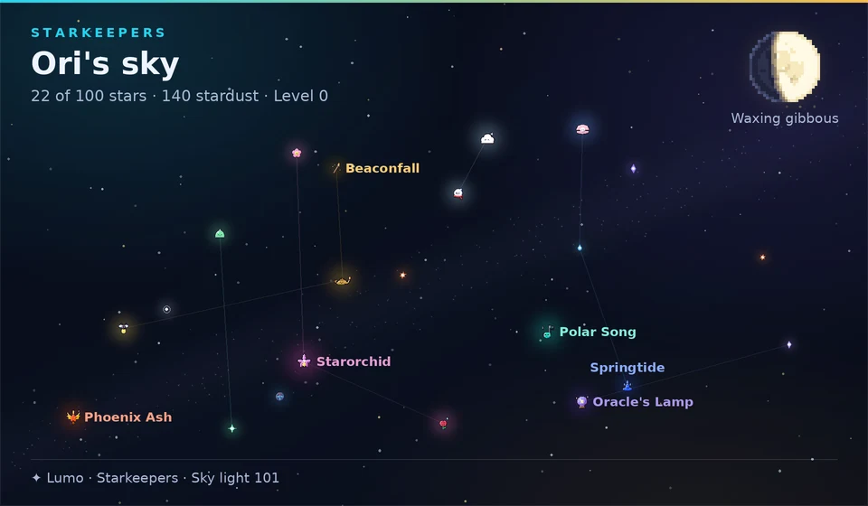

Um bot do Discord · Starkeepers em beta
Um céu noturno que vive no seu servidor do Discord.
Toda noite aparece uma nova leva de estrelas. Pegue uma, mantenha sua sequência de vigília e complete constelações com o resto do servidor. Quando quiser briga, leve um time de até três das suas estrelas para uma caçada.
Grátis para adicionar · Nada para instalar · 22 comandos de barra · 7 jogos com Lumo Coins
servidoresmembros

/sky watch
/sky view/sky hunt/sky team/sky boss/play/queue view/game/slots/connect4/rank/top/profile/vote/giveaway start/poll create/reminder create/setup status/help/sky watch/sky view/sky hunt/sky team/sky boss/play/queue view/game/slots/connect4/rank/top/profile/vote/giveaway start/poll create/reminder create/setup status/helpExperimente o Lumo aqui mesmo.
Toque num comando para ver o que o Lumo responde no Discord. São respostas reais do Lumo, tocadas a partir de um roteiro, então nada é enviado para lugar nenhum.
Um servidor de mentirinha · #night-sky
Uma estrela por noite, se você aparecer.
Use /sky watch uma vez por noite. Faça as três tarefinhas da noite, mantenha a sequência viva e veja sua coleção com /sky view. Se perder uma noite, a sequência recomeça, então talvez valha um lembrete.

03 · Caçadas · Beta
Às vezes uma estrela revida.
Leve suas três melhores estrelas para uma caçada. Os especiais carregam no terceiro movimento e as supremas no oitavo. Se você vencer, a estrela selvagem pode decidir ficar.
| Raridade | Chance de ela se juntar a você |
|---|---|
| Comum | 15% |
| Incomum | 12% |
| Rara | 8% |
| Radiante | 5% |
| Celestial | 3% |

Ele também faz as coisas normais de bot.
- Música
- SoundCloud no seu canal de voz, com uma fila cujos botões qualquer pessoa do canal pode usar.
- Jogos e Coins
- Blackjack, caça-níqueis, pôquer e mais alguns, todos com Lumo Coins. Dinheiro de brincadeira, nada real.
- Níveis
- XP por conversar, um cartão
/ranke cargos por nível se você quiser. - Ferramentas do servidor
- Sorteios, enquetes, cartões de lembrete, um cargo de entrada, cartões de boas-vindas, registros, purge, um canal isca Void para bots de spam e um AutoMod leve. Cargos por reação e cargos de cor ficam no painel web (beta).

Chat com IA para o servidor inteiro.
Ele entende imagens, pesquisa na web, conversa por voz ao vivo e cria imagens e vídeos, com nome, personalidade e avatar próprios definidos no painel. $4.99 por mês por servidor no Ko-fi, cancele quando quiser.